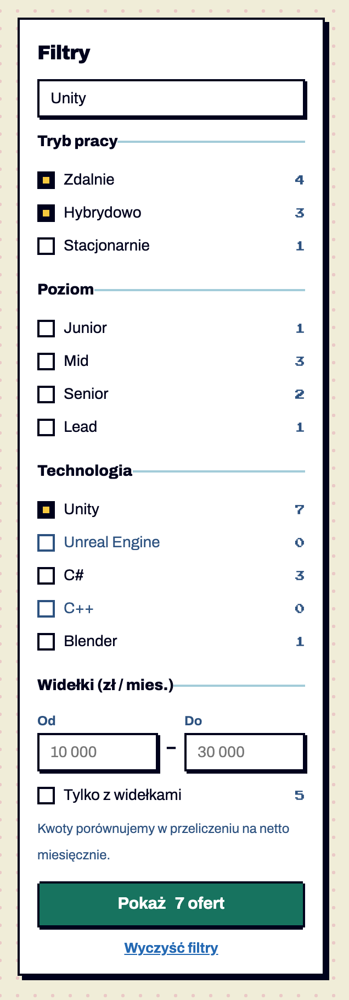
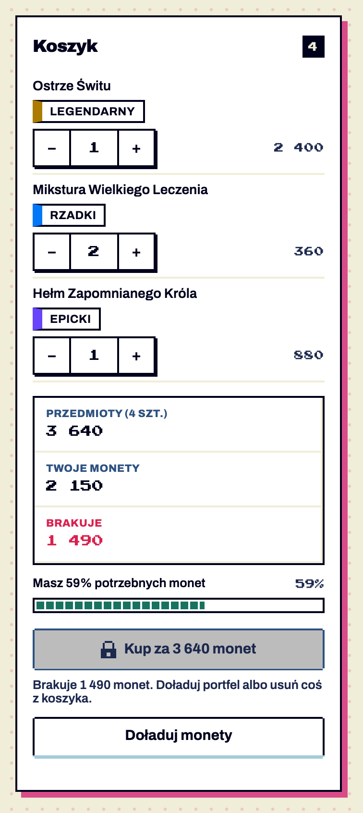

Senior Gameplay Programmer
NowaPixel Forge Studio · Kraków
20 000–27 000 zł netto B2B
Wszystkie kwestie zamknięte decyzjami właściciela (wybrane warianty oznaczone „Wybrane”, wdrożone w systemie 1.10.0). Zostały tylko testy ręczne: czytnik ekranu, Windows w wysokim kontraście, telefon. Przykłady są zbudowane na stylach systemu 1.9.1; wykresy rysuje charts.js, palety sprawdził skrypt validate_palette.js.
Konrad Kosiorek — wpisany w design.md §0.5 i w dokumentacji.
„18–24 tys.” zamiast „18–24K” — w systemie, przykładach, ekranach i osiach wykresów (wersja 1.9.1).
Kolor błędu w trybie ciemnym jest w liście 31 kolorów Jehkoba32 (design.md §2.4) — kwestia nr 3 zamknięta przy okazji.
Pakiety mają kolory z palety NES: Legendarny złoty #AC7C00, Epicki fioletowy #6844FC, Rzadki niebieski #0078F8. Paleta wykresów v1.8 używa dokładnie tych trzech kolorów (seria 1 = fioletowy, 2 = złoty, 3 = niebieski). W panelu pracodawcy oba elementy stoją obok siebie — poniżej realny przykład: wykres źródeł kandydatów przy tabeli ofert z pakietami. Fioletowa „Wyszukiwarka” wygląda jak „Epicki”, złote „Polecenia” jak „Legendarny”. Kolor sugeruje związek, którego nie ma.
| Oferta | Pakiet | Aplikacje |
|---|---|---|
| Senior Unity Developer | Epicki | 48 |
| Game Designer | Legendarny | 31 |
| Pixel Artist | Rzadki | 17 |
Skąd przychodzą kandydaci
wszystkie aplikacje, listopad
Wyświetlenia ofert
ostatnie 7 dni — jedna seria w kolorze „Epicki”
| Oferta | Pakiet | Aplikacje |
|---|---|---|
| Senior Unity Developer | Epicki | 48 |
| Game Designer | Legendarny | 31 |
| Pixel Artist | Rzadki | 17 |
Skąd przychodzą kandydaci
wszystkie aplikacje, listopad
Wyświetlenia ofert
ostatnie 7 dni — jedna seria w łupkowym #2D5280
Paleta zostaje, a w design.md dopisujemy zasadę: na ekranie z pakietami wykresy kategorii nie mogą stać obok kolumny pakietów — wykres na osobnej zakładce lub podstronie „Statystyki”.
Skąd przychodzą kandydaci
tryb ciemny
Aplikacje tygodniowo
jedna seria — w ciemnym jasny łupkowy #A3CCD9
Po wyborze B dojdzie osobny token --chart-single: #2D5280 w jasnym (kontrast 8,0:1 z bielą) i #A3CCD9 w ciemnym (8,4:1 z panelem).
Agenci budujący ekrany testowe dodali elementy, których nie ma w systemie. Są w rejestrze jako „kandydaci”. Dla każdego: jak wygląda teraz, gdzie wystąpił i co proponuję — przyjąć do systemu, zastąpić istniejącymi klockami albo odrzucić.
.card-metaEkran: lista ofert z filtrami (S11) · 8 kart

Propozycja
Pixel Forge Studio · Kraków
20 000–27 000 zł netto B2B
.card-meta, opcjonalna część karty K07). Rozwiązuje realny problem: 3 kluczowe atrybuty oferty w jednej linii, czytelne na liście..opt-nEkran: lista ofert z filtrami (S11) · 9 opcji

Propozycja
.opt-n, część panelu filtrów K08) — pomaga uniknąć wyboru, który da 0 wyników.list-controls.js sam liczy pasujące pozycje dla każdej opcji (z uwzględnieniem pozostałych filtrów) i wpisuje je do .opt-n; opcja z 0 jest wyszarzona, ale nie zablokowana..rangeEkran: lista ofert z filtrami (S11) · widełki
Propozycja
.range, część K08/K23) — list-controls.js już obsługuje data-min / data-max, brakowało tylko wyglądu..cartEkran: sklep z przedmiotami (S13) · panel boczny

Propozycja
Brakuje 1 490 monet.
.stepper (36 px zamiast 28 px), rzadkość → .tier-tag (już jest), suma → .facts, pasek monet → .progress, zakup → przycisk zablokowany z powodem.